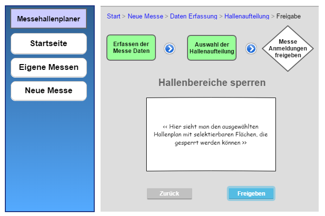

Es soll ein Prototyp einer Weblösung für die Bereitstellung einer Messehallenorganisationsanwendung erstellt werden. Messeveranstalter, Aussteller und Besucher sollen dort auf Messehalleninformationen zugreifen können. Sodass Messeveranstalter Ausstellungsflächen anbieten können und Austeller selbstständig ihren Stand dort anmelden können. Außerdem erhalten Messebesucher die Möglichkeit sich die aktuellen Messen inklusive Hallenplan angeben zu lassen.
Die Dokumentation wurde am 17.05.19 erstellt.
Für eine mehrzahl von Interaktionen wird ein 3 Komponenten Aufbau mit entsprechenden Hierachie Ebenen genutzt. Eine Navigation, eine Listenansicht und eine Detailansicht bzw. Bearbeitungsansicht werden gleichzeitig innerhalb einer Seite vorhanden sein und über Events mit einander Kommunizieren.
Desktop Ansicht
Mobile Ansicht
Der Messeveranstalter soll die Möglichkeit haben seine Messen inklusive Hallenauslegung der Standorte im Messehallenplaner einzupflegen.
Der Veranstalter einer Messe möchte möglichst mit wenig Aufwand seine verfügbaren Messestände den Ausstellern kommunizieren. Außerdem will er entsprechend der Sicherheitsbestimmungen und Messeveranstaltungsauflagen eine passende Hallenaufteilung haben, damit die Messe reibunglos stattfinden kann.

Bei der Sperrung einer Fläche sind folgende Sperrungsgründe möglich:
Hier kann innerhalb einer Liste eine Messe ausgewählt werden (per Klick) und eine Übersicht der Anmeldungen + Hallenplan erhalten werden. Auserdem existiert eine volltext Suche um angezeigte Messen filtern zu können.
In dieser Ansicht können zusätzlich freie Hallenflächen gesperrt werden, Anmeldungen bearbeitet und gesperrte Flächen wieder freigegeben werden.
Der Aussteller soll die Möglichkeit haben eine Übersicht der stattfindenen Messen zu erhalten und in welcher er dann selbstständig über eine interaktive Hallenplanansicht einen freien Ausstellungstand anmelden kann.
Der Aussteller möchte über anstehende Messeveranstaltungen mit freien Austellungständen informiert werden. Außerdem will er die Anmeldung möglichst einfach durchführen ohne zu viel Informationen angeben zu müssen bzw. mehrfach bei weiteren Messe Anmeldungen. Der Austeller sollte einmalig Informationen zu seiner Organisation angeben müssen.
Es wird eine Liste mit anstehenden Messen mit verfügbaren Messeständen angezeigt. Einzelne Messen können per Klick gewählt werden. Daraufhin wird eine Hallenplan-Ansicht geöffnet. Auserdem existiert eine volltext Suche um angezeigte Messen filtern zu können.
Diese Ansicht wird and die Messeübersichts Seite angehangen. Hier kann eine noch freie Fläche im Hallenplan selektiert werden. Sobald diese selektiert wird, werden Eingabemasken für die Anmeldung freigeschaltet. Sollte bei der ausgewählten Messe bereits ein Platz gebucht sein, wird anstatt der Anmeldungsoption eine Stornierungs-Option angeboten.
Besucher sollen über anstehende Messen Hallenpläne samt Austeller Buchungen einsehen können.
Besucher haben hauptsächlich den Wunsch für eine Messe eine schnelle und einfache Übersicht über die Austeller und dessen Standpositionen einer Messe zu erfahren, um diese dann tatsächlich auch dort auffinden zu können.
Dem Bseucher wird eine Liste mit anstehenden Messen angezeigt. Diese kann er über eine Filtermaske auf bestimmte Messeangaben und Aussteller filtern. Wenn ein Messe Element ausgewählt wird, erscheint eine Hallenplan Ansicht mit insprechender Austeller Information.
Es wird entsprechend der ausgewählten Messeveranstaltung der Hallenplan mit bereits existierenden Anmeldungen, eine Legende dazu und die entsprechenden Austeller mit Platz-Nr. angezeigt. Sollte bei der Suche ein Austeller ausgewählt sein, wird dieser im Hallenplan besonders markiert und in der Austellerübersicht hervorgehoben.